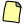
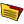

-  Create simple program: Start working on a program or exercise quickly without neither creating projects nor definifing any settings. Just choose a template and start writting your code.
 Create new project: If you need to write a more complex program you may want to create a project. Projects can handle several source files, custom compiling settings, advance extra options, external tools integration, and more.
Create new project: If you need to write a more complex program you may want to create a project. Projects can handle several source files, custom compiling settings, advance extra options, external tools integration, and more.-  Open and existing file or project: